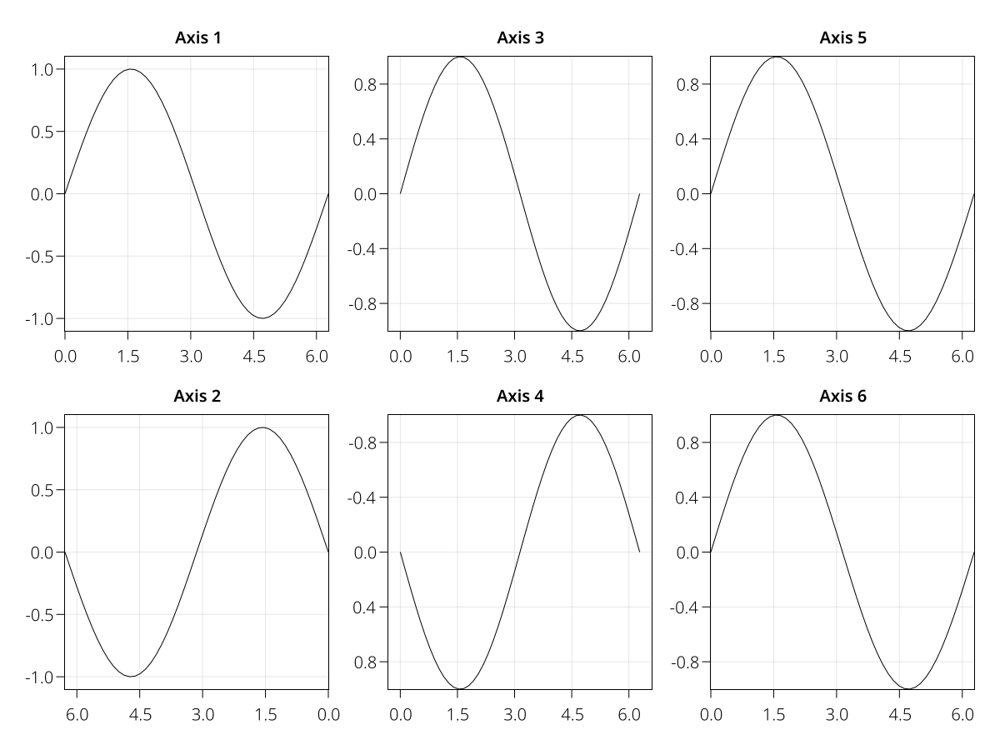
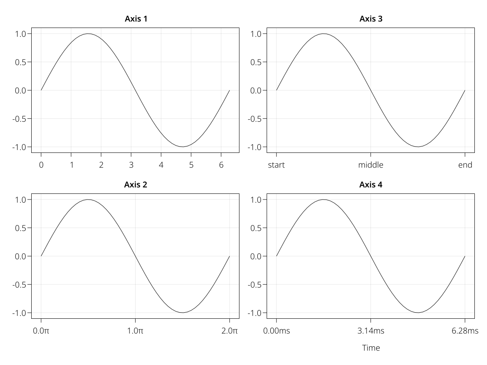
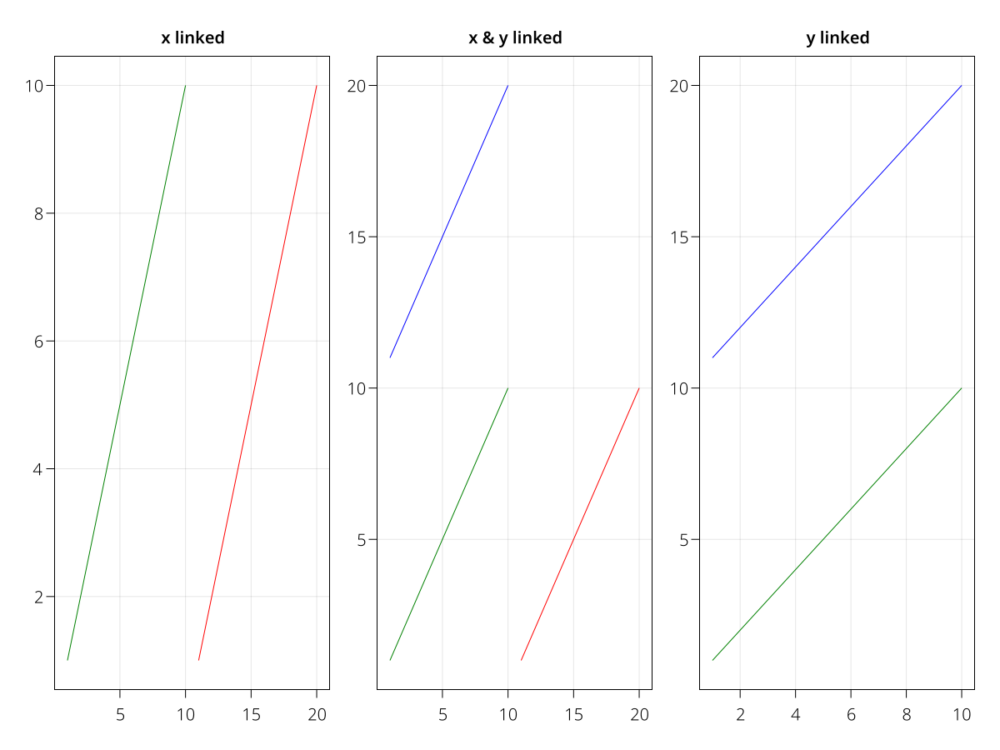

LAxis
This object represents a 2D axis that has many functions to make it more convenient to use with layouts. For a grid layout, the axis is a rectangle whose size is not yet determined, which has "protrusions" sticking out its sides. Those protrusions are the axis decorations like labels, ticks and titles. The protrusions only change if you change something about the axis attributes, but they stay the same when the layout is resized. Therefore, the main axis area will always be determined by the remaining space after the protrusions are subtracted.
The axis interacts in two directions with the layout. When the size of one of its protrusions changes, this will notify its GridContent. This will then notify its parent GridLayout and so on, until the full layout is recomputed. When that's done, the LAxis object will have received a new bounding box with which it should align given its size and alignment attributes. This is now updated and the axis' subscene is adjusted to its new size. All axis decorations then also update their positions.
using MakieLayout
using AbstractPlotting
using Animations
scene, layout = layoutscene(resolution = (600, 600))
axes = [LAxis(scene, xlabel = "x label", ylabel = "y label", title = "title")
for i in 1:2, j in 1:2]
layout[1:2, 1:2] = axes
a_title = Animation([0, 2], [20.0, 50.0], sineio(n=2, yoyo=true, prewait=0.2))
a_xlabel = Animation([2, 4], [20.0, 40.0], sineio(n=2, yoyo=true, prewait=0.2))
a_ylabel = Animation([4, 6], [20.0, 40.0], sineio(n=2, yoyo=true, prewait=0.2))
record(scene, "example_protrusion_changes.mp4", 0:1/60:6, framerate = 60) do t
axes[1, 1].titlesize = a_title(t)
axes[1, 1].xlabelsize = a_xlabel(t)
axes[1, 1].ylabelsize = a_ylabel(t)
endSetting axis limits and reversing axes
You can set axis limits with the functions xlims!, ylims! or limits!. The numbers are meant in the order left right for xlims!, and bottom top for ylims!. Therefore, if the second number is smaller than the first, the respective axis will reverse. You can manually reverse an axis by setting ax.xreversed = true or ax.yreversed = true.
Note that if you enforce an aspect ratio between x-axis and y-axis using autolimitaspect, the values you set with these functions will probably not be exactly what you get, but they will be changed to fit the chosen ratio.
using MakieLayout
using AbstractPlotting
scene, layout = layoutscene(resolution = (1200, 900))
axes = layout[] = [LAxis(scene) for i in 1:2, j in 1:3]
xs = LinRange(0, 2pi, 50)
for (i, ax) in enumerate(axes)
ax.title = "Axis $i"
lines!(ax, xs, sin.(xs))
end
xlims!(axes[1], [0, 2pi]) # as vector
xlims!(axes[2], 2pi, 0) # separate, reversed
ylims!(axes[3], -1, 1) # separate
ylims!(axes[4], (1, -1)) # as tuple, reversed
limits!(axes[5], 0, 2pi, -1, 1) # x1, x2, y1, y2
limits!(axes[6], BBox(0, 2pi, -1, 1)) # as rectangle
Modifying ticks
There are multiple ways to set or determine tick values and labels. Internally, first get_tickvalues(ticks, vmin, vmax) is called with the ax.xticks or ax.yticks attribute as ticks, and the limits of the respective axis as vmin and vmax. This function retrieves the numeric values of the ticks. To determine the actual strings being displayed, get_ticklabels(format, ticks, values) is then called where format is the content of the attribute ax.xtickformat or ax.ytickformat and values is the result of get_tickvalues.
The most common use cases are predefined but custom tick finding behavior can be implemented by overloading get_tickvalues and get_ticklabels. Here are the signatures of the existing methods:
MakieLayout.get_tickvalues — Functionget_tickvalues(::AbstractPlotting.Automatic, vmin, vmax)Calls the default tick finding algorithm, which could depend on the current LAxis state.
get_tickvalues(lt::LinearTicks, vmin, vmax)Runs a common tick finding algorithm to as many ticks as requested by the LinearTicks instance.
get_tickvalues(tup::Tuple{<:Any, <:Any}, vmin, vmax)Calls get_tickvalues(tup[1], vmin, vmax) where the first entry of the tuple should contain an iterable tick values and the second entry should contain an iterable of the respective labels.
get_tickvalues(tickvalues, vmin, vmax)Uses tickvalues directly.
MakieLayout.get_ticklabels — Functionget_ticklabels(formatter, ticks, values)Forwards to get_ticklabels(formatter, values) if no specialization exists.
get_ticklabels(::AbstractPlotting.Automatic, tup::Tuple{<:Any, <:Any}, values)Returns the second entry of tup, which should be an iterable of strings, as the tick labels for values.
get_ticklabels(::AbstractPlotting.Automatic, values)Gets tick labels by applying Showoff.showoff to values.
get_ticklabels(formatfunction::Function, values)Gets tick labels by applying formatfunction to values.
get_ticklabels(formatstring::AbstractString, values)Gets tick labels by formatting each value in values according to a Formatting.format format string.
using MakieLayout
using AbstractPlotting
scene, layout = layoutscene(resolution = (1200, 900))
axes = layout[] = [LAxis(scene) for i in 1:2, j in 1:2]
xs = LinRange(0, 2pi, 50)
for (i, ax) in enumerate(axes)
ax.title = "Axis $i"
lines!(ax, xs, sin.(xs))
end
axes[1].xticks = 0:6
axes[2].xticks = 0:pi:2pi
axes[2].xtickformat = xs -> ["$(x/pi)π" for x in xs]
axes[3].xticks = (0:pi:2pi, ["start", "middle", "end"])
axes[4].xticks = 0:pi:2pi
axes[4].xtickformat = "{:.2f}ms"
axes[4].xlabel = "Time"
Hiding axis decorations
Hiding axis decorations frees up the space for them in the layout if there are no other protrusions sticking into the same column or row gap that prevent enlarging the axis area. This makes it easy to achieve tight layouts that don't waste space. In this example, we set the column and row gaps to zero, so we can see the shrinking white space better.
using MakieLayout
using AbstractPlotting
scene = Scene(resolution = (600, 600), camera=campixel!)
layout = GridLayout(
scene, 2, 2, # we need to specify rows and columns so the gap sizes don't get lost
addedcolgaps = Fixed(0),
addedrowgaps = Fixed(0),
alignmode = Outside(30))
axes = [LAxis(scene, xlabel = "x label", ylabel = "y label", title = "title")
for j in 1:2, i in 1:2]
layout[1:2, 1:2] = axes
record(scene, "example_hiding_decorations.mp4", framerate=3) do io
recordframe!(io)
for ax in axes
ax.titlevisible = false
recordframe!(io)
end
for ax in axes
ax.xlabelvisible = false
recordframe!(io)
end
for ax in axes
ax.ylabelvisible = false
recordframe!(io)
end
for ax in axes
ax.xticklabelsvisible = false
recordframe!(io)
end
for ax in axes
ax.yticklabelsvisible = false
recordframe!(io)
end
for ax in axes
ax.xticksvisible = false
recordframe!(io)
end
for ax in axes
ax.yticksvisible = false
recordframe!(io)
end
for ax in axes
ax.bottomspinevisible = false
ax.leftspinevisible = false
ax.topspinevisible = false
ax.rightspinevisible = false
recordframe!(io)
end
endAxis aspect ratios
If you're plotting images, you might want to force a specific aspect ratio of an axis, so that the images are not stretched. The default is that an axis uses all of the available space in the layout. You can use AxisAspect and DataAspect to control the aspect ratio. For example, AxisAspect(1) forces a square axis and AxisAspect(2) results in a rectangle with a width of two times the height. DataAspect uses the currently chosen axis limits and brings the axes into the same aspect ratio. This is the easiest to use with images. A different aspect ratio can only reduce the axis space that is being used, also it necessarily has to break the layout a little bit.
using MakieLayout
using AbstractPlotting
using FileIO
scene, layout = layoutscene(resolution = (1200, 900))
axes = [LAxis(scene) for i in 1:2, j in 1:3]
tightlimits!.(axes)
layout[1:2, 1:3] = axes
img = rotr90(load("cow.png"))
for ax in axes
image!(ax, img)
end
axes[1, 1].title = "Default"
axes[1, 2].title = "DataAspect"
axes[1, 2].aspect = DataAspect()
axes[1, 3].title = "AxisAspect(418/348)"
axes[1, 3].aspect = AxisAspect(418/348)
axes[2, 1].title = "AxisAspect(1)"
axes[2, 1].aspect = AxisAspect(1)
axes[2, 2].title = "AxisAspect(2)"
axes[2, 2].aspect = AxisAspect(2)
axes[2, 3].title = "AxisAspect(0.5)"
axes[2, 3].aspect = AxisAspect(0.5)
Controlling data aspect ratios
If you want the content of an axis to adhere to a certain data aspect ratio, there is another way than forcing the aspect ratio of the whole axis to be the same, and possibly breaking the layout. This works via the axis attribute autolimitaspect. It can either be set to nothing which means the data limits can have any arbitrary aspect ratio. Or it can be set to a number, in which case the targeted limits of the axis (that are computed by autolimits!) are enlarged to have the correct aspect ratio.
You can see the different ways to get a plot with an unstretched circle, using different ways of setting aspect ratios, in the following example.
using MakieLayout
using AbstractPlotting
using Animations
# scene setup for animation
container_scene = Scene(camera = campixel!, resolution = (1200, 1200))
t = Node(0.0)
a_width = Animation([1, 7], [1200.0, 800], sineio(n=2, yoyo=true, postwait=0.5))
a_height = Animation([2.5, 8.5], [1200.0, 800], sineio(n=2, yoyo=true, postwait=0.5))
scene_area = lift(t) do t
IRect(0, 0, round(Int, a_width(t)), round(Int, a_height(t)))
end
scene = Scene(container_scene, scene_area, camera = campixel!)
rect = poly!(scene, scene_area,
raw=true, color=RGBf0(0.97, 0.97, 0.97), strokecolor=:transparent, strokewidth=0)[end]
outer_layout = GridLayout(scene, alignmode = Outside(30))
# example begins here
layout = outer_layout[1, 1] = GridLayout()
titles = ["aspect via layout", "axis aspect", "no aspect", "data aspect"]
axs = layout[1:2, 1:2] = [LAxis(scene, title = t) for t in titles]
for a in axs
lines!(a, Circle(Point2f0(0, 0), 100f0))
end
rowsize!(layout, 1, Fixed(400))
# force the layout cell [1, 1] to be square
colsize!(layout, 1, Aspect(1, 1))
axs[2].aspect = 1
axs[4].autolimitaspect = 1
rects = layout[1:2, 1:2] = [LRect(scene, color = (:black, 0.05),
strokecolor = :transparent) for _ in 1:4]
record(container_scene, "example_circle_aspect_ratios.mp4", 0:1/60:9; framerate=60) do ti
t[] = ti
endLinking axes
You can link axes to each other. Every axis simply keeps track of a list of other axes which it updates when it is changed itself. You can link x and y dimensions separately.
using AbstractPlotting
using MakieLayout
scene, layout = layoutscene(resolution = (1200, 900))
layout[1, 1:3] = axs = [LAxis(scene) for i in 1:3]
linkxaxes!(axs[1:2]...)
linkyaxes!(axs[2:3]...)
axs[1].title = "x linked"
axs[2].title = "x & y linked"
axs[3].title = "y linked"
for i in 1:3
lines!(axs[i], 1:10, 1:10, color = "green")
if i != 1
lines!(axs[i], 1:10, 11:20, color = "blue")
end
if i != 3
lines!(axs[i], 11:20, 1:10, color = "red")
end
end
Axis interaction
You can zoom in an axis by scrolling and pan by right-clicking and dragging. The limits can be reset using ctrl + click. Alternatively, you can just call autolimits! on the axis.
For some axes you might want to limit zooming and panning to one dimension or disable it completely. This can be achieved using the attributes xpanlock, ypanlock, xzoomlock and yzoomlock.
# an LAxis that can only be zoomed and panned horizontally, for example for
# temporal signals like audio
ax = LAxis(scene, ypanlock = true, yzoomlock = true)You can also interactively limit zoom and pan directions by pressing and holding a button during zooming or panning. By default those buttons are x and y, respectively, but you can change them with the attributes xpankey, ypankey, xzoomkey and yzoomkey. Buttons can be found in AbstractPlotting.Keyboard, for example the x button is accessed as AbstractPlotting.Keyboard.x.